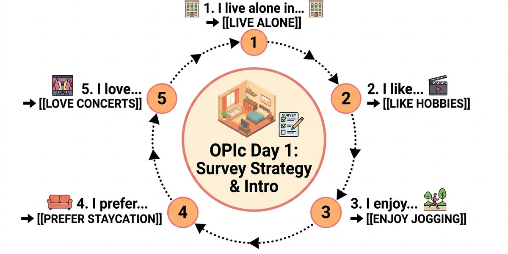
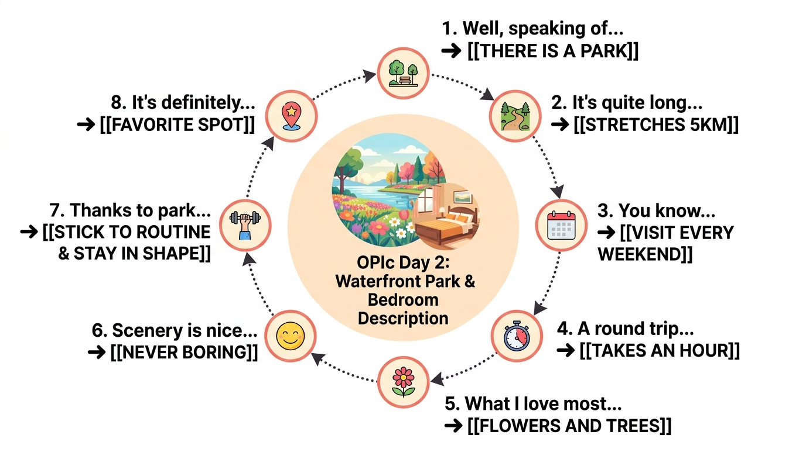
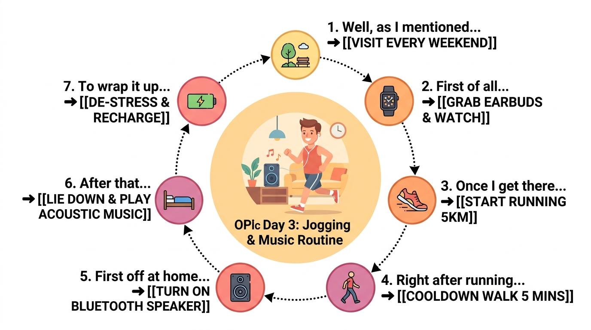
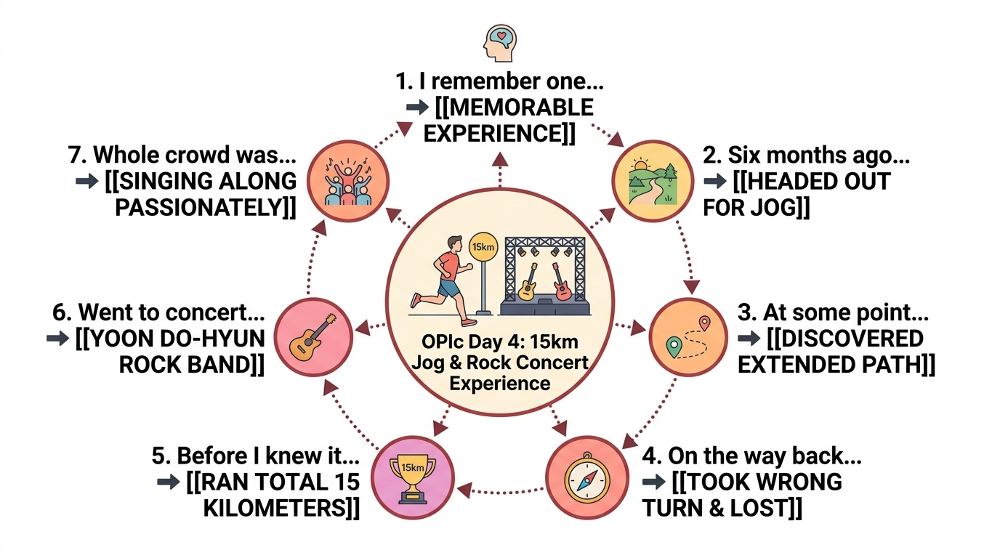
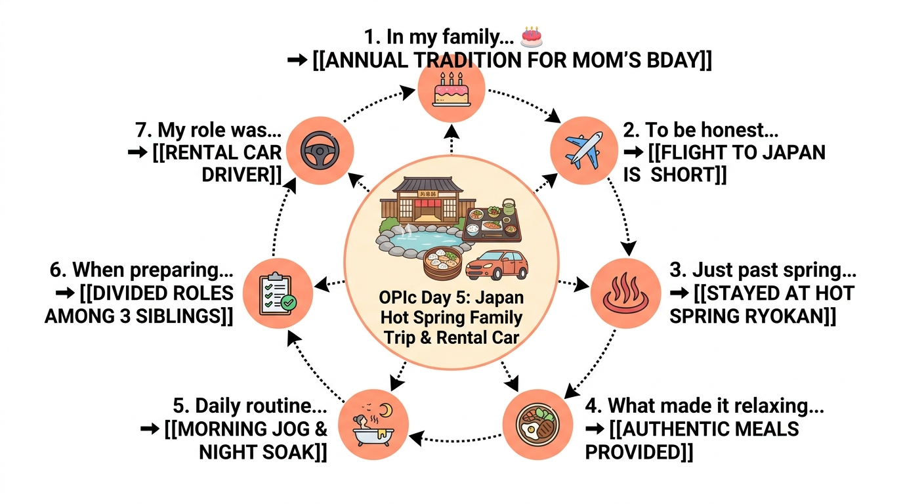
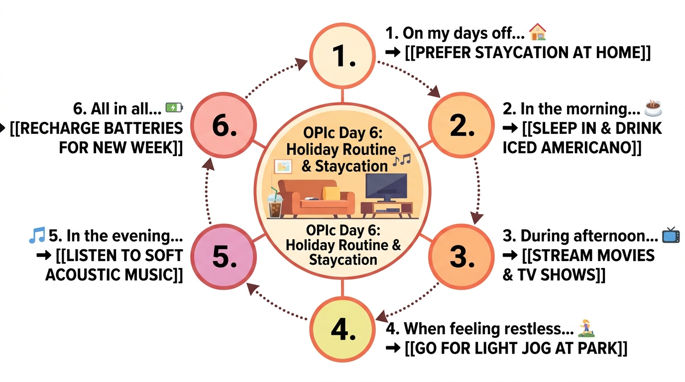
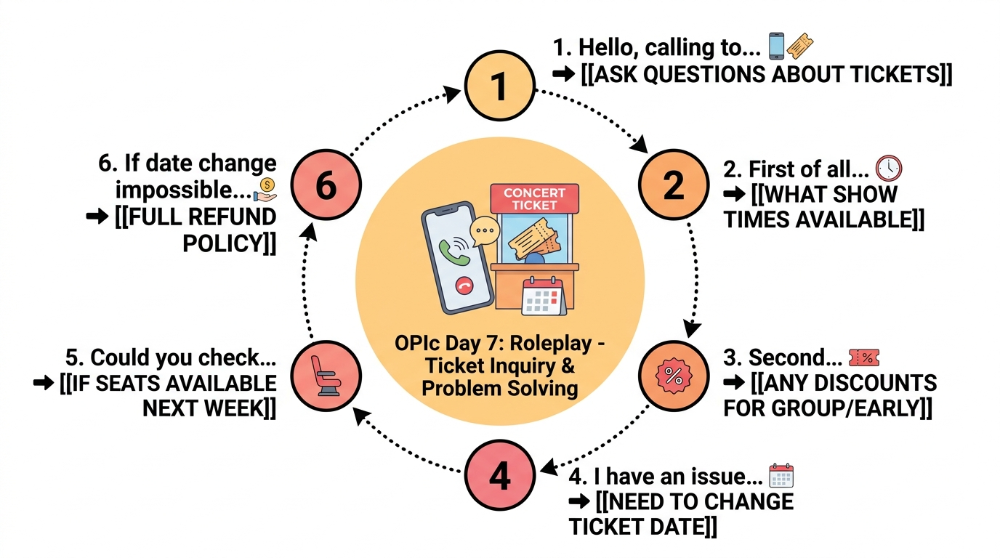

아래 항목들을 선택하면 서베이 출제 범위를 최소화하고, 공원/걷기/조깅 및 영화/공연/콘서트 스토리를 100% 돌려막기할 수 있습니다.
[신분] 일했던 경험 없음
직장, 프로젝트, 회식 관련 어려운 돌발 질문 차단
[학생] 수업 등록 없음
전공, 교수님, 시험 관련 질문 차단
[주거] 홀로 거주 (아파트)
룸메이트 질문 없이 내 방/집 묘사 하나로 통일
🎬 영화 보기 / 공연 / 콘서트
티켓 예매, 장소 묘사, 에피소드 공유
🌳 공원 가기 / 걷기 / 조깅
집 근처 공원 묘사 & 날씨 에피소드 100% 공유
🎵 음악 듣기 & 🏠 집 휴가
집에서 편하게 음악 듣는 휴식 루틴 공유
✈️ 국내 여행 & 해외 여행
기억에 남는 에피소드 및 장소 묘사 공유
🗣️ Day 1 핵심 표현 입 트기 훈련
서베이 선택 가이드 항목들을 커버하는 Day 1 핵심 입트기 스크립트 (Full Paragraph)입니다.

I live alone in a two-bedroom apartment. I like watching movies, going to parks, and listening to music. I enjoy taking a walk and jogging at the waterfront park every weekend. I prefer taking a staycation at home and listening to soft music. I love going to concerts and watching live shows.
🔊 문장별 섀도잉 & 녹음 연습 (Day 1 Script)
🌊 [맞춤 실전] 수변 공원 묘사 (Waterfront Park)
사용자님의 실제 이야기를 담은 공원 가기 / 걷기 / 조깅 3종 세트 만능 답변입니다.

Well, speaking of my favorite park, there is a lovely waterfront park located very close to my house. It's quite long, and it stretches for about 5 kilometers along the water. You know, I visit this park every single weekend to go jogging. A round trip usually takes me about an hour, which is just the right amount of exercise for me. What I love most about this park is that there are so many beautiful flowers and lush trees along the trail. Because the scenery is so nice, running there never gets boring at all. So, thanks to this park, I think I am able to stick to my weekend running routine and stay in shape. It's definitely my favorite spot in my neighborhood.
🔊 문장별 섀도잉 & 녹음 연습 (Park Script)
🛏️ [맞춤 실전] 내 방 묘사 (My Bedroom)
사용자님의 실제 방 특징(킹사이즈 침대, 실링팬 스마트 조명, 전용 욕실, 고양이 에피소드)을 반영한 맞춤 고득점 답변입니다.
Well, speaking of my bedroom, it's definitely my favorite space in the house. I have a king-size bed, and right next to it, there's a small side table for my phone and smartwatch chargers. What's really cool is that my room light has a built-in ceiling fan controlled by a remote. Because of the ceiling fan, my room stays very cool in the summer even without a standing fan. Also, the light turns on automatically every morning, which helps me wake up right away. Another great thing is that I have an attached bathroom in my room. Even when I wake up early to take a shower and get ready for work, I don't disturb my family members sleeping in other rooms. Sometimes while I'm sleeping, my cats sneak into my room and sleep right between my legs. They are super cute, but I occasionally wake up in the middle of the night because I feel too hot! So, all in all, my bedroom is super comfortable and convenient for my daily life. I just love spending time there.
시간의 흐름(순서 접속사: First of all ➔ Once I get there ➔ Right after running ➔ All in all)을 자연스럽게 전달하는 루틴 답변입니다.

Well, as I mentioned before, I tend to visit the waterfront park near my house every single weekend. First of all, before heading out, I put on my running shoes and grab my wireless earbuds and smartwatch. Once I get to the park, I start running along the 5-kilometer trail. Right after running, I do a light cooldown walk for about 5 minutes to catch my breath, and then I head back home. All in all, this running routine is the perfect way to kick off my weekend and stay healthy.
🔊 문장별 섀도잉 & 녹음 연습 (Day 3 Park Routine)
🎵 [실전 루틴 2] 집에서 음악 듣기 & 휴식 루틴 (Music & Staycation Routine)
집에서 휴식을 취할 때 음악을 듣는 일상적인 루틴 답변입니다.
Well, whenever I want to unwind at home, listening to music is my go-to routine. First off, I change into comfortable clothes and turn on my Bluetooth speaker in my bedroom. After that, I usually lie down on my king-size bed and play a playlist of soft acoustic music. So, to wrap it up, listening to music at home really helps me de-stress and recharge my batteries after a long week.
🔊 문장별 섀도잉 & 녹음 연습 (Day 3 Music Routine)
🏃♂️ [맞춤 실전] 우연히 15km를 달린 날 (Park Experience)
Combo Q3 — "Tell me about a memorable experience you had at the park."

I remember one particularly memorable experience at the waterfront park near my house. It was about six months ago on a Sunday morning — I headed out for my usual weekend jog along the waterfront trail. At some point, I discovered a newly extended path that I had never seen before, so I decided to explore it and ran for about an extra 15 minutes. But on the way back, I somehow took a wrong turn and ended up on an unfamiliar path — I was completely lost. I kept running around trying to find my way back, and before I knew it, I had run a total of 15 kilometers. My legs completely gave out after that, and I had no choice but to walk the rest of the way home. It was the first time in my life that I had ever run 15 kilometers — even if it was by accident. But strangely, that experience gave me real confidence — I thought, if I can run 15km by accident, then with a little more training, I could actually complete a half marathon someday.
🔊 문장별 섀도잉 & 녹음 연습 (Day 4 Park Experience)
🎸 [맞춤 실전] 윤도현 락밴드 콘서트 (Concert Experience)
Combo Q3 — "Tell me about a memorable experience related to music."
Actually, I have a really memorable experience related to music — it was a rock concert I attended before I got married. My wife — who was my girlfriend at the time — and I went to see Yoon Do-hyun Band, one of Korea's most legendary rock bands, live in concert. We had standing seats right next to the speakers, so the music was absolutely thunderously loud — you could feel it in your chest. The whole crowd was singing along passionately to every single song, and the energy in the venue was just electric. At that moment, it felt like everyone in the venue — thousands of complete strangers — had all become one. It was such a special and unforgettable memory, not just because of the incredible music, but because I got to share that moment with the person who later became my wife.
🔊 문장별 섀도잉 & 녹음 연습 (Day 4 Concert Experience)
♨️ [맞춤 실전 1] 어머니 생신 기념 일본 온천 가족여행 (Japan Family Trip)
Combo Q1 — "You indicated in the survey that you enjoy international travel. What countries or cities do you like to visit, and why do you like those places?"

Well, in my family, we have an annual tradition where my mother, my older sister, my younger sister, and I take an overseas trip together for my mother's birthday. To be honest, I'm not a big fan of flying because spending too much time at airports and on planes is exhausting, but Japan is just right because the flight is so short. Just this past spring, the four of us traveled to Japan, and we stayed at a wonderful traditional accommodation with a hot spring. What made it so relaxing was that delicious authentic meals were fully provided right at the lodging, so we didn't have to worry about finding restaurants. Our daily routine was just perfect — I went for a refreshing morning jog, we did some sightseeing during the day, and then soaked in the hot spring after dinner. Best of all, my mother loved every single moment of it, which made the whole trip deeply meaningful for all of us.
Combo Q2 / Q3 — "Tell me about how you prepare for international trips, and describe any memorable experience or challenge you had while traveling."
Whenever we prepare for our family trip, the three of us siblings divide up the roles to make everything go smoothly. For our recent trip to Japan, my older sister booked the accommodations, while my younger sister took care of the flight tickets. My responsibility was reserving a rental car and getting an international driving permit in advance so we could travel comfortably with my mother. When I started driving in Japan, the steering wheel was on the right side and we had to drive on the left, so it took some time to get used to. At first, I had to concentrate really hard, but once I got the hang of it, having a rental car made our trip incredibly convenient. We were able to visit scenic hidden spots and move at our own pace without the hassle of public transit. Thanks to our teamwork and the rental car, it turned out to be one of the smoothest and most enjoyable family trips we've ever had.
🔊 문장별 섀도잉 & 녹음 연습 (Preparation & Rental Car)
🏖️ [맞춤 실전] 평소 휴일 루틴 & 홈 스테이케이션 (Holiday & Weekend Routine)
콤보 빈출 — "What do you usually do on your holidays or days off? Tell me about your typical holiday routine from morning to night."

Well, when it comes to my holidays or weekends, I usually like to keep a healthy and productive routine. Even on holidays, I wake up around 8 AM, have a light salad and yogurt, and head over to the waterfront park to go jogging. After getting back from the run, I take a refreshing shower and enjoy a delicious lunch with my family. In the afternoon, I relax in my room to watch some movies or spend an hour or two studying English. In the evening, I usually order some delicious food for dinner and spend quality time relaxing with my cats. So, to wrap it up, spending a peaceful day off like this really helps me de-stress and fully recharge my batteries for the upcoming week.
🔊 문장별 섀도잉 & 녹음 연습 (Holiday & Staycation)
🎭 [롤플레이 11번] 친구에게 공원 조깅 제안 & 질문 3~4가지 (Inviting Friend to Park)
11번 질문하기 — "You want to go to a nearby park with your friend this weekend. Call your friend and ask three or four questions about the plan."

Hey Min-su, it's Hyuk! Do you have a minute to talk? I was wondering if you're free this Saturday morning. You know the waterfront park near my place? The weather is supposed to be amazing, so I was thinking of going there for a light jog and a walk. What time works best for you?Around 9 or 10 in the morning would be okay? Also, after running, how about grabbing some brunch or a cup of coffee nearby? Oh, and should I pick you up in my car, or do you want to meet directly at the park entrance? Give me a call back when you hear this, okay? Bye!
🔊 문장별 섀도잉 & 녹음 연습 (Day 7 RP Part 1 - 질문하기)
🚨 [롤플레이 12번] 긴급 상황 발생 사과 & 대안 2~3가지 제시 (Canceling & Proposing Alternatives)
12번 문제해결·대안제시 — "You have an unexpected situation and you cannot go to the park with your friend as planned. Call your friend, explain the situation, and offer two or three alternatives."
Hey Min-su, it's Hyuk again. I'm really sorry, but something unexpected just came up and I don't think I can make it to the park tomorrow morning. My mother just called and asked me to help her with an urgent family errand, so I have to go over there. I feel so bad about this! First of all, would you be available on Sunday morning instead? The weather looks great on Sunday as well. If Sunday doesn't work for you, how about meeting up late tomorrow afternoon around 5 PM after I finish my errand? Whichever time works for you, I'll definitely treat you to a delicious lunch and coffee to make it up to you. Let me know what you think, and I'm so sorry again!